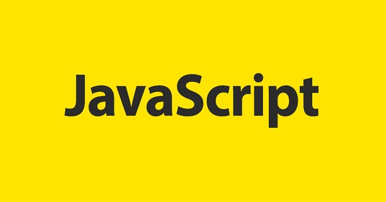

Javascript существует уже четверть века. Срок внушительный для подобных технологий. За это время он прошёл большой путь, стал мощным инструментом IT-индустрии. По уровню популярности язык в группе лидеров. При этом он считается доступным для освоения, дружественным по отношению к новичкам.
Язык программирования JavaScript. Его возможности и особенности.
Особенности JavaScript

JavaScript называют языком скриптов или сценариев. Скрипты — это набор инструкций, которые выполняются при загрузке страницы. Браузер самостоятельно интерпретирует код на JavaScript, для этого даже не требуется компиляция (перевод языка программирования в машинный код). Скрипты можно прописать внутри кода страницы или подключить к HTML отдельным файлом. Например в стандартной разметке index.html JS-код прописывают внутри тега script, помещенного в тег body:
Где применяется JavaScript
-
Клиентская часть веб—приложений (frontend).
Это интерфейс страницы, то есть всё, что видит пользователь: контент, кнопки, формы обратной связи, меню. С помощью JS интерфейс реагирует на действия пользователя (клики мыши, нажатия клавиш), также язык отвечает за запоминание данных и автозаполнение форм.
-
Серверная часть веб—приложений (backend).
Серверный код пишут на платформе Node.js. На JS работают, например, запросы AJAX (asynchronous javascript and XML), которые отправляются на сервер в фоновом режиме, без перезагрузки веб-страницы, и push-уведомления — всплывающие сообщения в браузере, которые реализуются с помощью технологии Comet.
-
Мобильные приложения на Android, iOS, Windows Mobile
когда нужно кросс-платформенное приложение или адаптация веб-приложения, а языков Kotlin (для Android) и Swift (для iOS) недостаточно, то используется JavaScript.
Возможности
-
Взаимодействие с пользователем
Всплывающие окна с полем для ввода почты или других данных, уведомления об использовании cookie.
-
Анимация
Это не только движущиеся объекты на странице и кнопки, но и карусель в галерее или плавная прокрутка страницы. -
Обработка данных HTML
JS помогает заполнить необходимые поля в формах, проверять буквенные и числовые значения, а также управлять HTML-элементами на странице. -
Математические вычисления
С помощью JS-скриптов на сайтах реализованы калькуляторы, например подсчет суммы заказа в корзине интернет-магазина.
Вывод информации о введеной дате
Реализация игры морской бой на JavaScript
See the Pen Untitled by Nikita (@Kolomyaka) on CodePen.
Ссылка на репозиторий